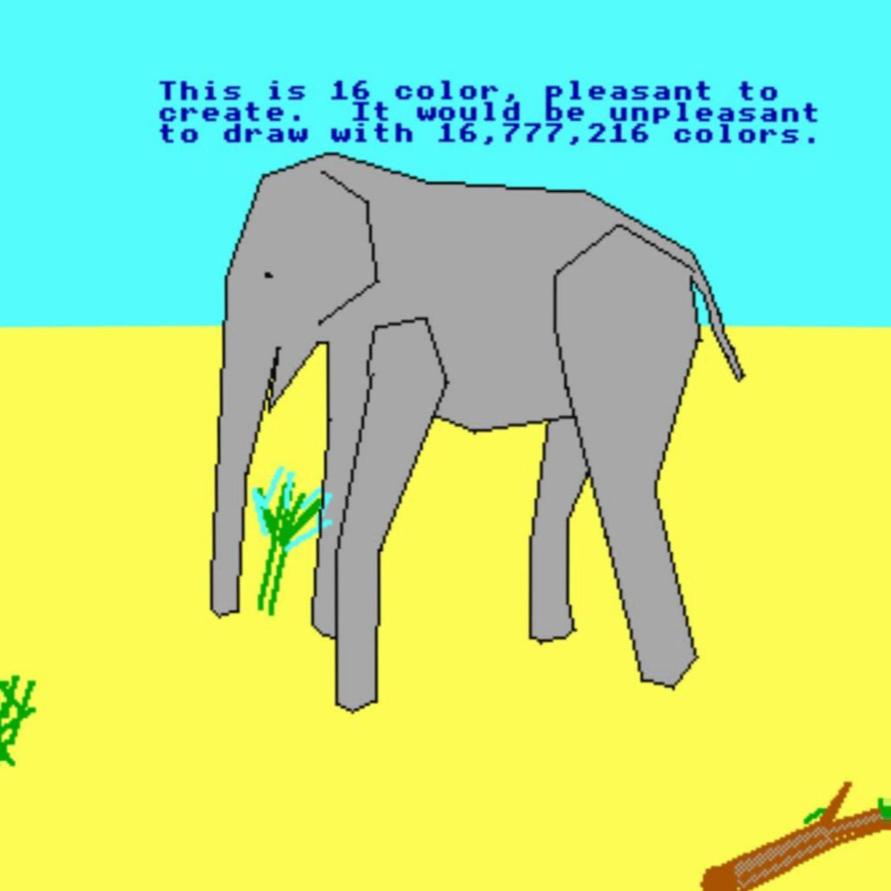

Short Bio
I am the best programmer on the planet. TempleOS is 87,000 lines of code. My HolyC compiler makes x86_64 machine code and it is 20,000 lines of code.
I wrote all the code from scratch, including a 20,000 line of code compiler that makes x86_64 machine code from HolyC or Asm and operates AOT and JIT. My JIT mode is not interpreted. It optimizes and compiles to x86_64 machine code.
I was chosen by God because I am the best programmer on the planet and God boosted my IQ with divine intellect.
Interests
What’s reality? I don’t know. When my bird was looking at my computer monitor I thought, ‘That bird has no idea what he’s looking at.’ And yet what does the bird do? Does he panic? No, he can’t really panic, he just does the best he can. Is he able to live in a world where he’s so ignorant? Well, he doesn’t really have a choice. The bird is okay even though he doesn’t understand the world. You’re that bird looking at the monitor, and you’re thinking to yourself, ‘I can figure this out.’ Maybe you have some bird ideas. Maybe that’s the best you can do.
Contacts

Rest in peace